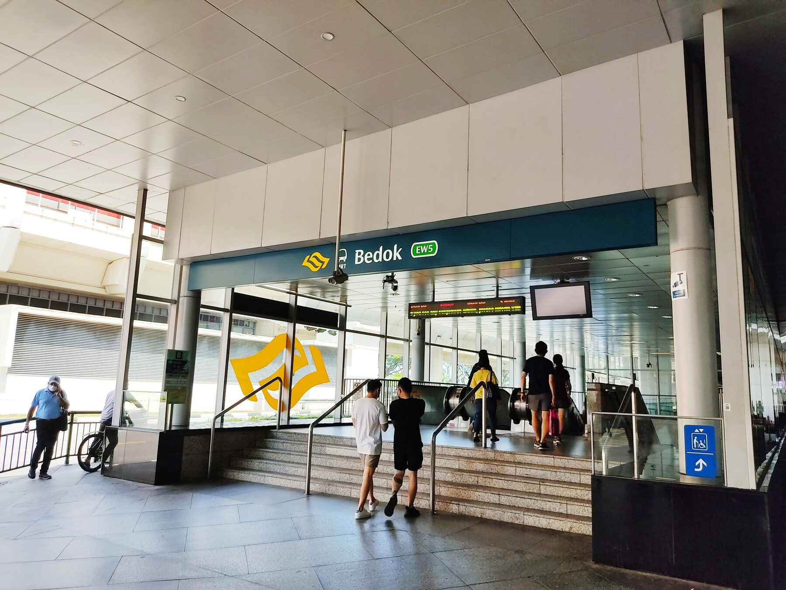
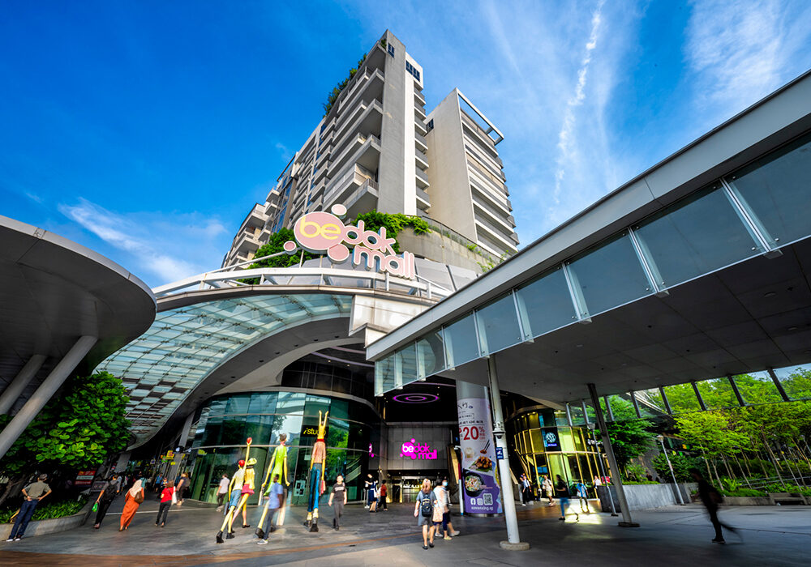
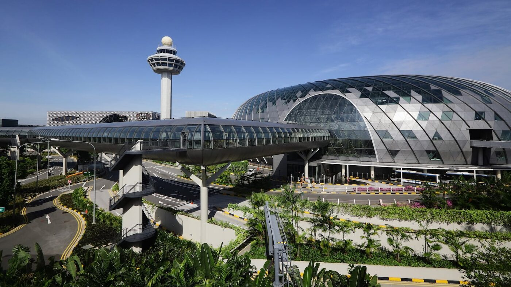
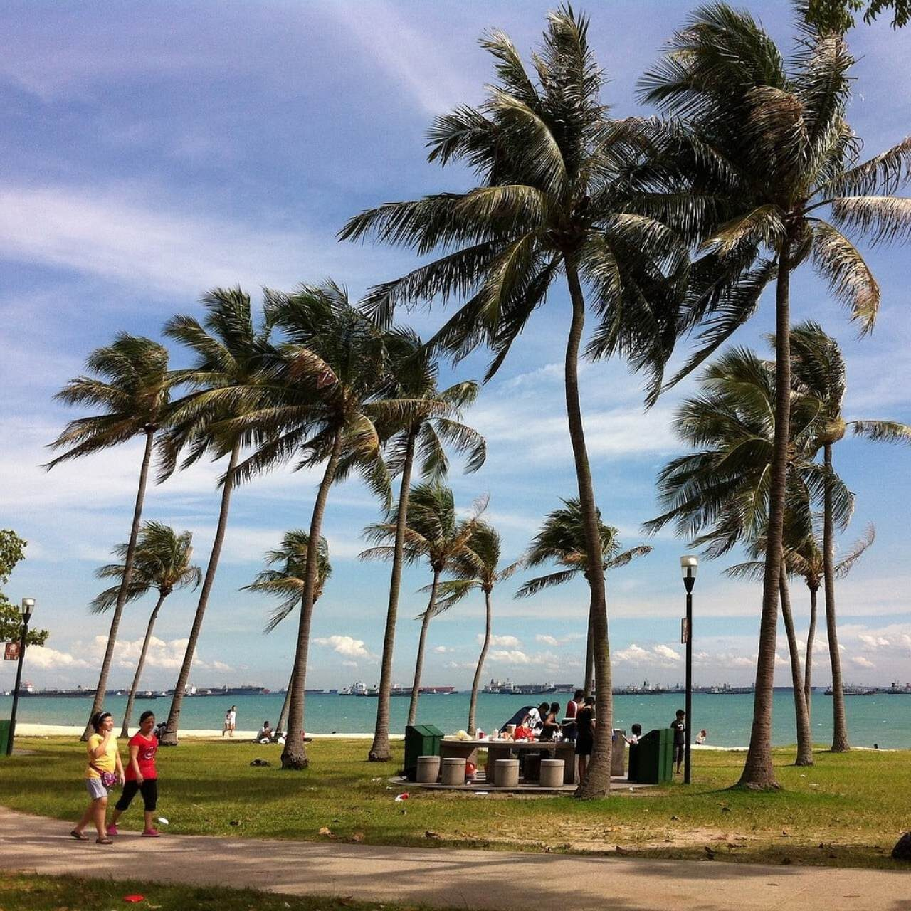

NEW UPPER CHANGI ROAD · DISTRICT 16
The next chapter
of Bedok living.
A future landmark of approximately 1,010 homes, within walking distance of Bedok MRT and the integrated transport hub.
“Bedok Reserve” is a working marketing name. The official project name has not been announced.
~300mto Bedok MRT*
~1,010future homes
99 yearsleasehold
S$1.425Bland bid
THE OFFICIAL FACTS
A rare, large-scale site in mature Bedok
URA awarded the residential parcel on 4 September 2026 after the tender closed with four bids. The winning offer established a new land-rate benchmark for a pure residential GLS site in the Outside Central Region.
WHY THE BID MATTERS
A decisive premium for location
The S$1.425 billion winning bid was about 13.8% above the S$1.252 billion second bid, and around 15.6% above Allgreen’s S$1,330 psf ppr Bedok Rise acquisition near Tanah Merah MRT. It signals strong developer conviction—but also a high cost base that the future project must support.
CONNECTED BEDOK
Town-centre convenience, eastern access
The site sits along New Upper Changi Road, about 300 metres from Bedok MRT and the integrated bus interchange, with daily essentials already established.
- Bedok MRT (EW5)Direct East–West Line connectivity toward the CBD and Changi.
- Bedok Mall & hawker favouritesRetail, supermarket, dining and services within the mature town centre.
- Schools and family catchmentEstablished educational options and a deep pool of Bedok HDB upgraders.
- East Coast lifestyleConvenient access to East Coast Park, Changi Airport and key eastern employment nodes.
Open interactive map ↗Marker is approximate and for orientation only.



RESIDENCES
Designed for real family demand
The developers have indicated a mix of two- to four-bedroom homes to keep price quantums realistic. Exact unit sizes, stacks and floor plans will only be available after planning and sales approvals.
2 Bedroom
Likely aimed at couples, smaller households and investors seeking an MRT-connected east-side address.
3 Bedroom
Expected to be the upgrader sweet spot, balancing family usability with an attainable total quantum.
4 Bedroom
For larger families and nearby residents seeking more space without leaving familiar Bedok.
Floor plans are not released yet.Register with Jetlee to receive the official layouts when available.Notify me on WhatsApp →
INDICATIVE PRICE STUDY
What might Bedok Reserve launch at?
No selling price has been announced. Based on the S$1,537 psf ppr land cost and published analyst commentary, the current market discussion centres around the high-S$2,000s to low-S$3,000s psf.
Lower estimateS$2,850–S$2,950 psfCBRE-style estimate range
Planning assumptionAbout S$3,000 psfUseful midpoint for early affordability planning
Bullish estimateS$3,100–S$3,200 psfUpper analyst projection
Illustrative homeAssumed sizeAt S$2,900 psfAt S$3,100 psf
2 Bedroom650 sq ftS$1.885MS$2.015M
3 Bedroom900 sq ftS$2.610MS$2.790M
4 Bedroom1,200 sq ftS$3.480MS$3.720M
Illustrations only—not a developer price list or financial advice. Actual layouts, areas, launch timing, discounts and prices may differ. Please consult the appointed sales team when official materials are released.
THE DEVELOPMENT TEAM
Three established names
The winning entities represent a collaboration among UOL Group, CapitaLand Development and Singapore Land Group.
AFFORDABILITY TOOL
Estimate your monthly mortgage
Adjust the assumptions for a quick planning estimate. This does not include BSD, ABSD, legal fees or CPF usage.
QUESTIONS, ANSWERED
Bedok Reserve FAQ
Is “Bedok Reserve” the official project name?
No. It is a working marketing name for this informational site. The developer has not announced the official development name.
Has the land sale been confirmed?
Yes. URA awarded the New Upper Changi Road residential site on 4 September 2026 to United Venture Development (Daisy) and CL Sapphire, representing UOL, CapitaLand Development and SingLand, for S$1.425388 billion.
How close is the project to Bedok MRT?
Industry reports place the site at roughly 300 metres from Bedok MRT and the integrated transport hub. Final walking routes and entrances will depend on the approved site plan.
Will it really launch around S$3,000 psf?
That is possible, but not confirmed. Published estimates span roughly S$2,850 to S$3,200 psf. The eventual price will depend on construction cost, financing, design, market conditions, unit size and the developer’s sales strategy.
Why is the land price so high?
The site is large, rare and close to an MRT station in a mature estate. It offers an established upgrader catchment, immediate amenities and east-side accessibility. The winning consortium also paid 13.8% more than the runner-up, reflecting its own strategic view of the site.
When could the project launch?
No official launch date is available. A reasonable working assumption is around 2028, but planning, approvals and construction preparation can shift the timeline.
Will it be mixed-use or integrated with the MRT?
URA awarded the parcel for residential use. It is near the existing Bedok integrated transport hub, but it has not been announced as a mixed-use or directly integrated development.
Who is the likely buyer profile?
Likely demand includes Bedok and eastern-region HDB upgraders, nearby landed-home residents, families who value mature-town convenience, and buyers seeking MRT connectivity. Suitability still depends on entry price, layout and personal holding horizon.
RESEARCH NOTES
Latest project intelligence
04 SEP 2026 · OFFICIAL
URA awards New Upper Changi Road site
Read the confirmed site area, GFA, successful tenderers and tendered price.
Read URA release ↗01 SEP 2026 · MARKET ANALYSISRecord OCR land benchmark explained
Bid comparison, nearby price benchmarks and analyst launch-price estimates.
Read analysis ↗REGISTER INTEREST
Get official floor plans,
pricing and preview dates first.
Tell Jetlee which unit type you are considering.
JETLEE · 8764 9315